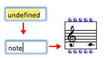

Adding Boxes Into a Patch
There are four ways to add a box in a patch editor :
- via the main menu
- via the contextual menu
- typing the box's name directly in the patch editor
- via the Library window.
Menus
This procedure is convenient if you don't know the exact name of the class or function you need.

Note that functions[1] and classes[2] are accessible via two distinct menus. Classes and Functions menus give access to the classes and functions of common packages : this is why they display the same names.
Select a class or a function and click somewhere with the cursor in the patch editor to add the box there.

To add a box via the contextual menu :
Ctrl/ right click in the patch editorselect
FunctionsorClasses.choose a box in a menu item.
The box will appear in the editor automatically.
Library Window
The packages[3] in the Library window contain the available OM classes and functions organized in thematic sub packages.
Open the Library window :
- select
Windows / Library - press
SHIFT+Cmd+p.
- select
Double click on the lower part of a package to open the classes and functions panes.
Drag and drop the function or class icon in the patch editor.
Adding a Box Directly in the Patch Editor
The name of a class or function can always be keyed in a patch editor directly.
|  |
Any OM or Lisp function can be created this way. This procedure may be especially useful since some classes and functions are not accessible via menus or packages. It implies being familiar with OM functions and classes names.
Default values can be directly assigned to a function when entering its name in the "undefined" box. For instance, typing "om+ 5 7" allows to assign 5 and 7 as default values to om+. |  |
In Lisp, a package is also a means to gather symbols, such as function names, class names, and so on, within a same specific name space. Some functions or classes can be declared in other packages if they were not designed for OM exclusive use, or if they come from specific libraries. In this case, adding a box directly in the patch editor requires typing the package name or nickname before its name.
A package can be designated by a name or a nickname. For instance, the main OM package name is "openmusic", and has for nickname "om". This syntactically corresponds to :
"name-or-nickname-of-the-package::name-of-the-function".
To identify the package hosting a given function or class, type the following expression in the OM Listener :
(package-name (symbol-package 'class-or-function-name))
The Listener will display the corresponding package.
- Function
A portion of code within a larger program, which performs a specific task. Operates upon 0 or more parameters and returns a value.
- Class
A category of objects sharing common properties – characteristics and behaviour. A class specifies the internal structure and behaviour of an object. In OM, it is represented in a patch by a factory box that can produce an instance of a class.
See also : Object, Instance
- Package
Contains functions or classes components belonging to a common category of programming items. Packages are provided at the installation of OM, but the can also be loaded dynamically or added by the user.